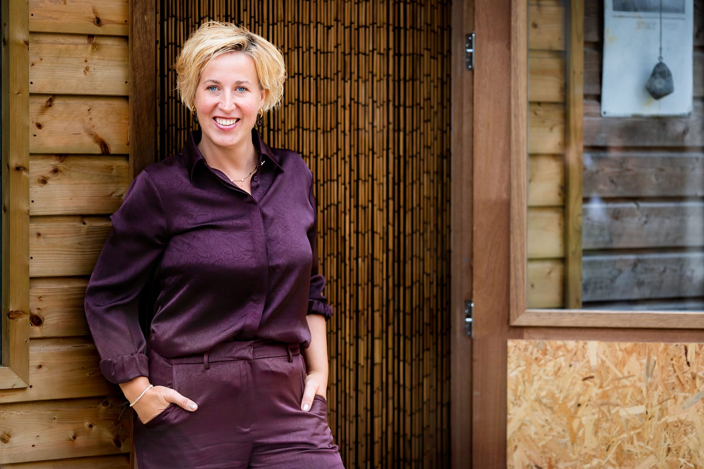
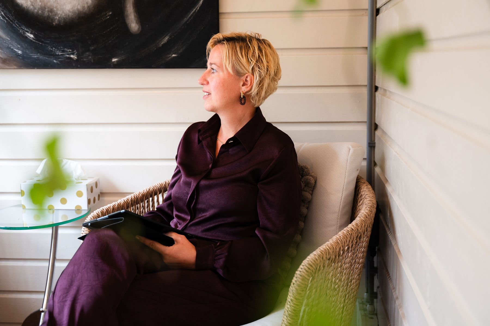
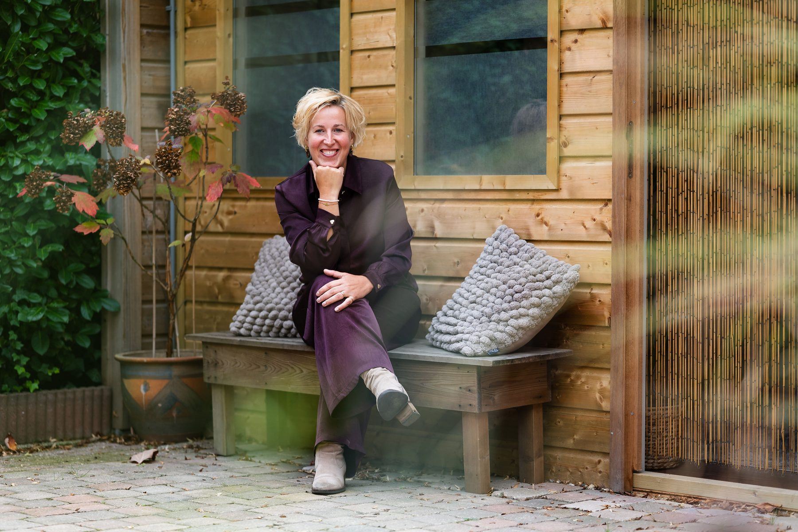
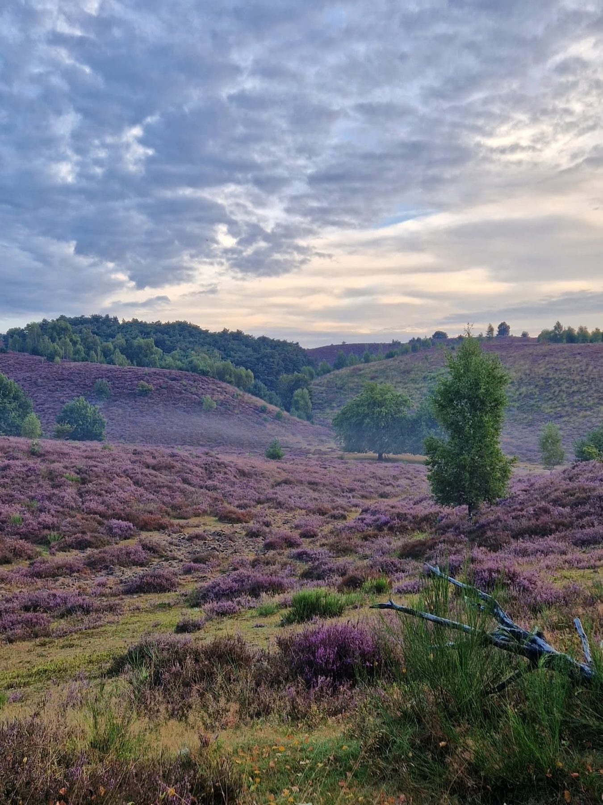

Psychosociale therapie
Inzicht in je gedachten, gevoelens, ervaringen en terugkerende patronen.
Lees meerLiesbeth Postma
Psychosociaal en lichaamsgericht therapeut
Voor (jong)volwassenen die mentaal vastlopen of hun weg zoeken bij verlies en verandering.


Misschien herken je dit…
Je denkt veel na, legt de lat hoog en twijfelt aan jezelf. Misschien ben je bang om fouten te maken of probeer je steeds aan de verwachtingen van anderen te voldoen.
Of je raakt steeds verder van jezelf verwijderd. Grenzen aangeven, gevoelens toelaten of ontdekken wat jij nodig hebt: het valt zwaar.
Misschien speelt er stress, angst, somberheid, een burn-out of een ingrijpend verlies. Of loop je telkens tegen dezelfde patronen aan.
Vaak hebben we al vroeg geleerd om gevoelens weg te stoppen, ons aan te passen of sterk te zijn. Wat ooit beschermde, kan later belemmeren.
Wat gevoeld mag worden, kan weer gaan stromen.
Mijn persoonlijke verhaal

Waarmee kan ik je helpen?
Bang om het niet goed genoeg te doen? Faalangst, prestatiedruk en de lat hoog leggen.
02Stress, angst, somberheid, burn-out of hooggevoeligheid. Aan de buitenkant gaat het goed, vanbinnen niet.
03Rouw om wat er was, om wat je mist of om wat je dacht dat er zou zijn.
04Pleasegedrag, codependentie, narcistische dynamieken en steeds verder van jezelf af raken.




Mijn werkwijze
In mijn begeleiding staat opnieuw leren voelen en vertrouwen centraal.
Ik combineer psychosociale en lichaamsgerichte therapie met methodieken die je helpen jezelf beter te begrijpen, oude patronen te herkennen en weer verbinding te maken met je gevoel. We kijken niet alleen naar wat je denkt, maar ook naar wat je voelt en ervaart in je lichaam.
Inzicht in je gedachten, gevoelens, ervaringen en terugkerende patronen.
Lees meerOpnieuw leren luisteren naar de signalen van je lichaam, je gevoelens, behoeften en grenzen.
Lees meerAandacht voor oude pijn, onvervulde behoeften en beschermingspatronen uit je jeugd.
Lees meerOmgaan met moeilijke gedachten en gevoelens en kiezen vanuit wat voor jou belangrijk is.
Lees meerWaar passend gebruik ik ook hypnotherapie, systemisch werk en mindfulness. Samen kijken we wat bij jou past, vanuit rust, veiligheid en vertrouwen.

Stap voor stap, in jouw tempo.
Wat cliënten zeggen
Een persoonsgerichte en brede aanpakNa mijn burn-out wist ik niet goed welke weg ik in moest slaan. Samen met Liesbeth heb ik hier een duidelijke invulling aan kunnen geven. Met een persoonsgerichte en brede aanpak heeft Liesbeth mij tot inzicht gebracht. Als therapeut is Liesbeth liefdevol maar ook duidelijk: ze kijkt naar wat je nodig hebt en gaat daar samen met jou mee aan de slag.
Liefdevolle stappen voor mezelfAl jaren leefde ik in een soort sneltrein zonder echt te luisteren naar mijn gevoel en te investeren in mezelf. Ik zocht iemand die mij begreep. Liesbeth kon met empathie naar mij luisteren, waardoor ik mij op mijn gemak voelde. Door haar therapie heb ik liefdevolle stappen voor mezelf kunnen zetten en had ik de moed en energie om op mijn gevoel af te gaan.
Puzzelstukjes vielen op hun plekIk vond het een leerzame en verhelderende periode. De puzzelstukjes vielen op hun plek. Ik voelde me op mijn gemak en prettig bij Liesbeth, daardoor hebben we snel stappen kunnen zetten. De oefeningen zijn praktisch en hebben echt geholpen om tot inzichten te komen en om emoties te doorleven en te accepteren. Niet altijd even fijn, maar wel nodig om verder te komen. En dat is gelukt.
Ik voel mij meer waardOmdat ik moeite had met loslaten ben ik bij Liesbeth terechtgekomen. Verschillende thema's kwamen aan de orde door haar tactische doorvragen. Wat ik tijdens de sessies zag, ben ik op doek gaan schilderen om het nog dieper te verwerken. Nog nooit zo mooi huiswerk gehad. Na vier sessies voel ik me meer waard, mag ik er zijn en durf ik gemakkelijker dingen te ondernemen en veranderingen aan te gaan.
Mijn aanbod
Persoonlijke begeleiding bij psychische en emotionele klachten, verlies en persoonlijke ontwikkeling. Met ruimte voor jouw verhaal.
Praktische informatieInzicht in familiedynamieken, terugkerende patronen en de invloed daarvan op jouw leven en relaties.
Lees meerOver zelfzorg, rouw, scheiding, verlies en verandering. Met aandacht voor bewustwording, verbinding en groei.
Bekijk de workshopsEven voorstellen
Ik ben Liesbeth Postma, gediplomeerd psychosociaal en lichaamsgericht therapeut.
Naast mijn opleidingen neem ik mijn eigen doorleefde ervaring mee. Het leven heeft mij geleerd hoe ingrijpend verlies en verandering zijn, hoe het voelt om jezelf kwijt te raken en opnieuw te ontdekken wat je voelt en nodig hebt.
Die ervaring leerde mij gevoelens niet langer weg te stoppen, maar er met zachtheid naar te luisteren.
Mijn kracht ligt in de combinatie van professionele kennis, doorleefde ervaring en oprechte betrokkenheid.
Ik begeleid vanuit rust, gelijkwaardigheid en vertrouwen, in jouw tempo.
Liesbeth
Lees meer over mij

Verandering begint vaak bij opnieuw contact maken met jezelf. Door ruimte te geven aan je gevoelens en behoeften kan stap voor stap meer inzicht, rust en vertrouwen ontstaan.
Je hoeft het niet alleen te doen. Je bent van harte welkom.
Lieve groet, Liesbeth
Neem contact op